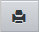
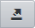

Список учебных изданий
На этом экране в виде таблицы представлены только те учебные пособия, которые имеют статус Рекомендовано МО РФ или Допущено МО РФ. По каждому из них в таблице содержится информация об авторе, названии, годе издания, издательстве, статусе. По некоторым из этих учебников есть КТП, сохраненные в системе "Сетевой Город", которые вам не надо вводить, и вы можете их сразу использовать в своей работе с помощью кнопки Использовать.
Вы можете просмотреть в удобном для печати виде, нажав на кнопку

, и затем распечатать, нажав кнопку Печать (Print) в новом открывшемся окне. Кроме того, есть возможность экспортировать КТП в таблицу формата MS Excel с помощью кнопки

. Подробнее, об особенностях этой возможности, вы можете прочитать на странице Экспорт данных из системы "Сетевой Город".
Если КТП по определенному учебнику задействован, то в колонке Планы уроков таблицы будет стоять пометка Используется.
Кто может вводить список учебников
Список учебных изданий в систему может вводить только специальный пользователь Администратор сервера системы "Сетевой Город", имеющий особый экран входа в систему. Дополнения к спискам учебников будут выходить по мере их публикации на официальных сайтах. Обновления списка учебников можно скачать с сайта: http://www.net-school.ru.
Примечание: Значение, указываемое в выпадающем списке Класс, обозначает параллель, для которой расчитан учебник, используемый на закладке Планы уроков. Если на странице в фильтре Класс выбрать, например, класс "10", то, при копировании плана на странице Копировать готовый план уроков по предмету, в названии будет стоять "Копировать готовый план уроков для 10 класса по предмету...". А если в фильтре Класс выбрать "Все", то надпись преобразуется в "Копировать готовый план уроков по предмету...".